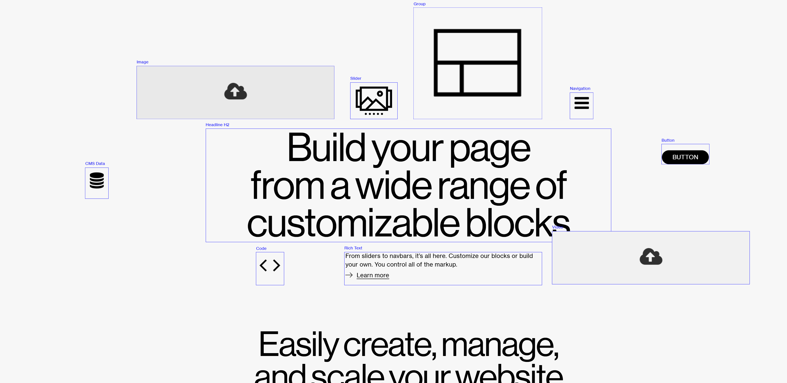

Home · Hero
page-grid.com
- A very large headline in a tight grotesk.
- Interface elements (Image, Slider, Button, Code, Video) drawn as outlined boxes with small blue labels, in motion.
- Borrow: the headline scale and the labelled, outlined UI blocks. For a product designer they read as components on a canvas.
